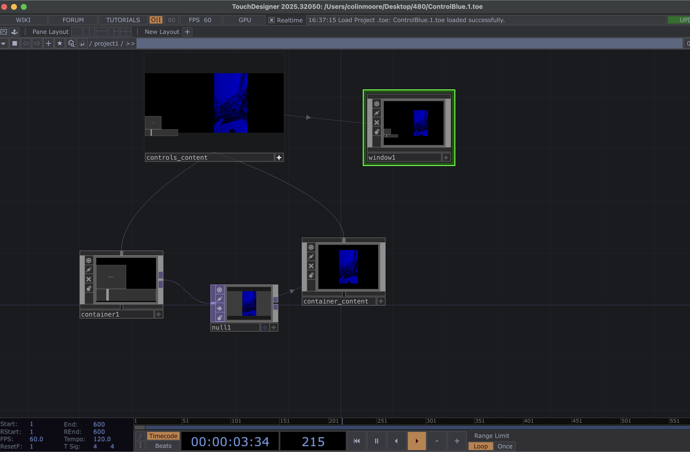

Exercise 2
Control Blue
Concept & Intent
For this assignment, I needed to use containers with two different controls that affect a video, while incorporating the color blue.My Network Flow was as followes: Movie File In TOP → Level TOP → Fit TOP → Out TOP, with Slider/Button controlling parameters through CHOP exports.
Process of Creating this Exercise
- First I made a container where it will have the controls and the effects my video will have.
- Inside the container, I added a Button COMP and a Slider COMP. Connected them both to a Math CHOP. I also added a moviefilein TOP for the video and connected it to an Out TOP so it could displayed at the top level window COMP.
- Next I started looking at different effects that I knew I could make blue without much struggle and I found TOP level. Then I experiment with the Level TOP options and making the color blue prominently I liked the inverted one the best and connected it with my math that is connected with the slider so did that.
- I had a button and I was not loving much options with the level and was looking at brightness but didn't like the 0-1 brightness so I made the math range from 0-1 to 1-2 so it wouldn't be dark on my video.
- I then started working in the upper part and connected the container to null TOP then reference another container called container_content with background param of null1. Both the container1 and container_content were connected to a third container named controls_content. Then I have the window reference the controls_content.
- Then I saw that the controls were not showing up in my container called controls_content and decided inside the container1 where the movie comes from to add a TOP fit between the TOP level and TOP out. I set the fit resolution to 1280 by 720 and it was fixed.
- Then in the upper level where the three containers are I did some adjustments with the containers, window and null. For Container 1 I set height to 200 , width was still 400. I align container1 children top to bottom. For container_content I made the width to 1280 and height to 720. The background TOP still reference the null1. For controls_content I set width 1680 and height 720. Had controls_content children align left to right.
- Lastly I adjust the window COMP I justify Horizontal Right.
Process & Results
TouchDesigner Network

TouchDesigner Container network flow for Control blue exercise
TouchDesigner Network
TouchDesigner showing the upper level of the container showing how the container1 elements is displayed on a window